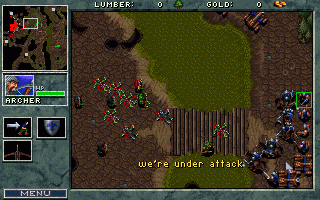
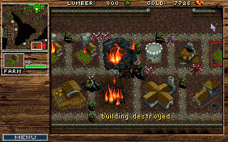
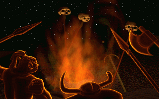

| <| RECENZJE |
Recenzja ta ukazała się w czasopiśmie ŚWIAT GIER KOMPUTEROWYCH, numer 3/95, a jej autorem jest Piotr Orcholski. Dziękuję Redakcji ww. pisma za pozwolenie na publikację tego tekstu na mojej stronie. Niestety nie posiadam innych czasopism z recenzjami Warcrafta, dlatego będę wdzięczny za pomoc w gromadzeniu kolejnych tekstów. Proszę o kontakt pod ten adres: jprokulewicz@poczta.onet.pl. |
|
Jak sięgam pamięcią, już w szkole mówiono mi, że kopiowanie cudzych pomysłów (patrz: przepisywanie zadań domowych od koleżanek) jest procederem niehumanitarnym i moralnie złym. Teoria teorią, a praktyka praktyką, toteż pomimo ostrzeżeń, człowiek często uciekał się do tyc metod, gdyż ułatwiły one po protu życie i pozwalały zaoszczędzić trochę czasu. Podobnie do sprawy podeszła firma Blizzard Entertainment. W przekonaniu, że dobry pomysł zawsze działa, stworzyła ona grę pt. Warcraft, opierając jej fabułę na bazie gry, która swego czasu (1991) odniosła całkiem spory suckes, a mianowicie Dune 2.  Zacznijmy od rzeczy oczywistych. Warcarft to rozgrywająca się w czasie rzeczywistym strtegia, mocnoosadzon w realiach fantasy i oparta przy tym o zsadę rozbudowy armii i jej zaplecza. Twój cel w grze to obrona pewnego królestwa przed najazdem lub jego podbój - w zależności od tego, czy grasz ludźmi, czy też orkami. Całość kampanii podielno jest na szereg misji o wzrastającym stopniu trudności oraz liczbie biorących w nich udział wojsk, dzięki czemu masz możliwość zdobycia doświadczenia przed trudniejszymi bitwami. Poszczególne misje rozgrywaj się w różnych warunkach. Czasami jest to puszcza, czasami bagna, a jezcze kiedy indziej lochy lub opuszczona (pozornie, oczywiście) kopalnia. Rodzaj scenografii ma jednak niewielki wpływ na końcowy rezultat. Kluczem do sukcesu jest (jak zwykle - chciałoby się rzec) stan konta oraz... ilość drewna. Pierwszy czynnik jest chyba oczywisty: im więcej masz kasy, tym więcej oddziałów jesteś w stanie wystawić i tym samym mniej podatny jesteś na ataki nieprzyjaciela. Ucieszy Cię na pewno wiadomość, że ze znalezieniem tego cennego kruszcu nie ma praktycznie problemów. Wcześniej czy później Twoi zwiadowcy natkną się na jakąś kopalnię złota, a dobrze wiedzieć, że w okolicy zawsze jest ich więcej . Drugi czynnik to drewno. Służy ono przede wszystkim do konstrukcji nowych budynków: farm, stajni, kuźni, itd; ale nie tylko. Do produkcji niektórych rodzajów wojsk, np: łuczników, również potrzebna jest jego ilość. Łuków w końcu nie robi się ze stali. Podobnie jak w przypadku złota, ze znalezieniem drewna nie powinieneś mieć problemów, gdyż lasów w Warcrafcie dostatek. Teraz powinno nasunąć Ci się pytanie: z czym jest problem? I czy w ogóle jest jakiś problem? Ano jest, typowy zresztą dla ier strategicznych. Njpierw trzeba jednak coś wytłumaczyć. Zarówno do ścinania drzew, jak i wydobywania złota służą chłopi (peasant). Musisz takiemu pokazać, w jakim miejscu ma rąbać lub gdzie ma wydobywać złoto, a on będzie to robił, dopóki kruszec nie wyczerpie się albo w pobliżu nie będzie już niczego, co nadawałoby się do ścięcia. I tutaj zaczynają się kłopoty. Na początku masz do dyspozycji z reguły dwóch rootników (nazwijmy ich tak, gdyż "chłop" brzmi jakoś dziwnie) oraz pewien niewielki zapas złota i drewna. Musisz teraz szybko się zdecydować, czy pieniądze te inwestować w nowych robotników, dzięki czemu napływ funduszy i surowca będzie szybszy, czy też w armię, której na pewno szybko będziesz potrzebował. Musisz przy tym wziąć pod uwagę, że robotnicy potrzebują ochrony, gdyż nie umiejąc walczyć są łtwym łupem dla przeciwnika. Ponadto droga od kopalni lub lasu do Twojego miasta może być całkiem długa, co jeszcze zwiększa zagrożenie atakiem. Zgoda, możesz więc powiedzieć, że najpierw tworzysz silną obstawę. Początkowych funduszy wystarczy Ci wprawdzie na kilku żołnierzy, jednak należy pamiętać, iż oni również tracą siły i mogą zostać zabici, a na zaciąg nowych może Ci nie starczyć pieniędzy , jeśli dopływ gotówki jest zbyt wolny, gdyż nie dysponujesz wystarczającą liczbą robotników i... kółko się zamknęło. Całą zabawa polega więc na utrzymywaniu odpowiedniej równowagi pomiędzy wielkością armii i liczba robotników, jakich może ona ochraniać. Ten problem będziesz musiał już jednak rozwiązać samodzielnie przy każdej misji. Tak na marginesie, warto dodać jeszcze, iż Twoi robotnicy potrafią także budować. Poza pieniędzmi i drewnem, które musisz przeznaczyć na ten cel, konstrukcja każego budynku oczywiście zaiera także pewną ilość czasu.  Jeśli przetrzymasz pierwszy krytyczny moment, a stan Twojego konta będzie wyrażony liczbą pięciocyfrową, możesz sobie pozwolić na akcje zaczepne. Na początku widzisz tylko najbliższą okolicę, toteż pierwszym Twoim zdaniem powinno być wysłanie zwiadowców, aby zbadali teren. Pozwoli Ci to odkryć kopalnie i lasy, jak również ustalić, gdzie znajduje się nieprzyjacielska placówka lub miasto. Ich zniszczenie jest z reguły warunkiem pomyślnego zakończenia misji. Najpierw jednak musisz rozbić wrogą rmię, a tutaj nie ma gotowej recepty na sukces, gdyż wiele zależy od zwykłego szczęścia. Siła Twojej armii leży nie tylko w jej liczebności, ale i w rodzaju wojsk, jakimi dysponujesz. Do wyboru masz ich w sumie 8, wliczając w to magiczne istoty, które mogą przywołać Twoi magowie. Piesi żołnierze to esencja Twojej armii, ale tylko na pocztku. Kiedy dostaniesz "licencję" na szkolenie łuczników (lub oszczepników, jeśli grasz orkami), w zasadzie na tym mógłbym poprzestać (choć z małym wyjątkiem), gdyż po ustawieniu podwójnego szeregu złożonego z samych łuczników możesz być pewien , iż nikt się przez niego nie przedrez - nawet demony wzywane przez orkowych magów. Tutaj okazuje się, iż sztuczna inteligencja programu nie stoi niestety na zbyt wysokim poziomie. W szybi mczasie można się zorientować, jakimi ścieżkami wędrują wrogie oddziały, a chodzą z reguły zawsze tymi samymi, i ustawić tam wspomniany mur łuczników. Program nie szuka wówczas nowych dróg ataku i niejako próbuje przebić się za wszelką cenę. Całość zabawy sprowadza się wówczas do obserwowania, jak trup nieprzyjaciela ściele się gęsto. Istnieje wprawdzie niebezpieczeństwo, iż orkowie sprowadzą katapultę, broń masowego rażenia o bardzo dużym zasięgu (którą tak nawiasem mówiąc, Ty również posiadasz), mo ona jednak tę wadę, iż nie może atakować celów znajdujących się zbyt blisko niej. Wystarczy więc dokonać wypadu oddziałem kawalerii i po kłopocie. Program również i tutaj udowadnia, iż nie jest zbbyt przebiegły, gdyż praktycznie nie ochrania swoich katapult. Z pozostałych jednostek warto zwrócić również uwagę na kapłanów i magów, gdyż dysponują oni czarami (patrz tabelka). Trzeba wprawdzie słono zapłacić za ich "wymyślenie", ale, wierz mi, opłaca się. Po deszczu meteorytów na przykład wrogie miasto to kupa gruzów.  Myślę, że po przeczytaniu tego krótkiego opisu, nikt nie ma już wątpliwości, co do zbieżności rozwiązań zastosowanych w Wrcrafcie i Dune 2. Jeśli nie, to przytoczę jeszcze kilka: mała mapka przedstawiająca całość obszaru gry z zaznaczonymi jednostkami własnymi i wroga, opcja tworzenia lepszych jednostek w miarę konstrukcji odpowiednich budynków, czy w końcu menu gracza, które jest niemal identyczne z tym, które zastosowano w Dune 2 - tyle, że umieszczone zostało po lewej, a nie po prawej stronie. Podobieństw tych jest zresztą znacznie więcej , ale nie sądzę, aby było warto przytaczać je wszystkie. Chciałbym tylko jescze powiedzieć, że nie jestem pewien, czy tak dokładne powtórzenie poprzednika bez nowych pomysłów, nie licząc szczegółów, jest drogą prowadzącą do sukcesu. Jakkolwiek zabawa z Warcraftem przypadła mi do gustu, to jednak z czystym sumieniem mogę stwierdzić, iż Dune 2 nadal bardziej mnie pasjonuje. Być może powoduje to fakt, iż po pewnym czasie jedyną rzeczą, jaką mogą zaofiarować kolejne misje Warcrafta, jest tylko wzrastająca liczba przeciwników do zabicia. A to trochę zbyt mało. Na sam koniec małe pocieszenie. Warcraft umożliwia zabawę w sieci lub przez modem, a zatem Twoim przeciwnikiem będzie w tym przypadku człowiek. Chociaż nie miałem jeszcze okazji spróbować tej opcji, to jednak wydaje mi się, iż tutaj dopiero będzie można zaznać prawdziwej przyjemności z obcowania z Warcarftem. Niestety, również nieco bardziej kosztownej. Piotr Orcholski DANE TECHNICZNE:Gatunek: strategiczna Wymagania: komputer PC z 1 MB RAM Ocena: 80% |